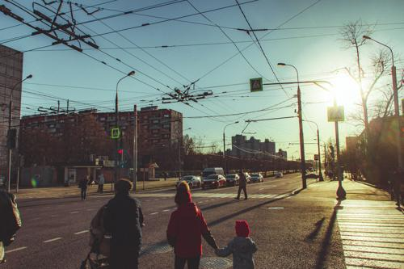
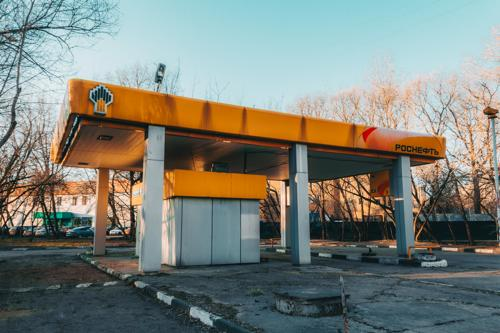
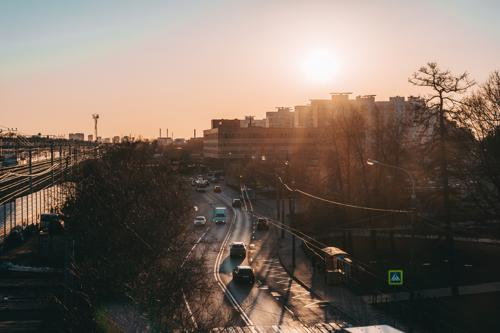
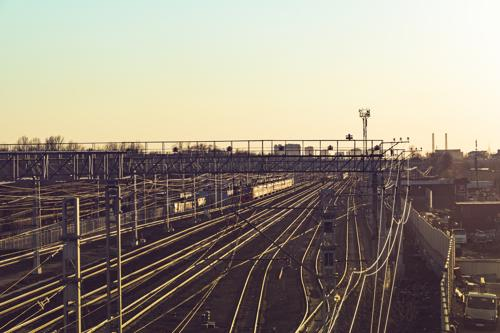
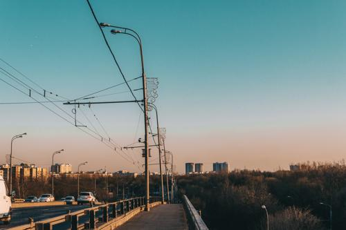
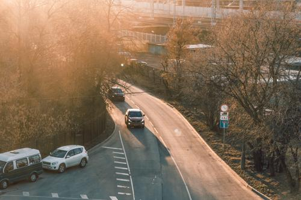

")
-  Фото №2" title="2020-03-24 -> Фото №2 (Кликни, чтобы глянуть фулл)">
-  Фото №3" title="2020-03-24 -> Фото №3 (Кликни, чтобы глянуть фулл)">
-  Фото №4" title="2020-03-24 -> Фото №4 (Кликни, чтобы глянуть фулл)">
-  Фото №5" title="2020-03-24 -> Фото №5 (Кликни, чтобы глянуть фулл)">
-  Фото №6" title="2020-03-24 -> Фото №6 (Кликни, чтобы глянуть фулл)">
-  Фото №7" title="2020-03-24 -> Фото №7 (Кликни, чтобы глянуть фулл)">